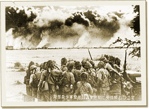

|
j
a v a s c r i p t |
December 31, 1941
Inauguration rites for the second term of the Quezon-Osmeña administration took place in Corregidor yesterday. Quezon pledged to “stand by America and to fight with her until victory is won.” Aquino took his Congressman’s oath in Manila. He’ll probably be Speaker of the House, and Yulo President of the Senate. Early to the office to find Naftaly there, unwavering in his insistence that Manila wouldn’t fall. As we discussed it, an extra joined in and we unfolded our maps. Realizing he had been badly misinformed, Naftaly left ashen-faced. News of a big Japanese offensive in the north broke at 1100. At the same time, the situation in the south worsened rapidly as the day wore on. Domei had previously boasted that their troops would be in Manila by New Year’s Day. By 1600 the grim realization dawned upon one and all. Manilans for the most part took it calmly and quietly. The city, though, was anything but....

Contemplating the spectacle of Manila afire before entering the city.
All morning and afternoon, blast-after-blast rattled windows, shook houses and frightened many as the USAFFE blew up stores of fuel, explosives and anything useful to the enemy. That was just the start. Though warned hours ahead that the remaining Pandacan oil reserves would be blown up between 1700 and 1800, no one was prepared for the ferocity of the blast. When it came, it was like all hell broke loose — a single catastrophic eruption that shot flames sky-high in an instant. As I watch some 1-1/2 hours later, a mile-wide blaze is in full swing, and the gas is only partly consumed. The flames reach up to a thousand feet and threaten to engulf the city. The smoke blots out the 7/8ths moon and every star in the sky. It grows more tragic and bountiful every moment — an astonishing and incredible tableau! On the street, a stunned man stared at length then remarked: “Now I have seen hell!” Another quietly added, “Either that, or it’s yet to come.” All night long, detonations rocked our house and reverberated throughout the city. They came from all corners: north, south, east and west — tragic booms foreshadowing our immediate future with a funereal beat. |
|
|
|
|